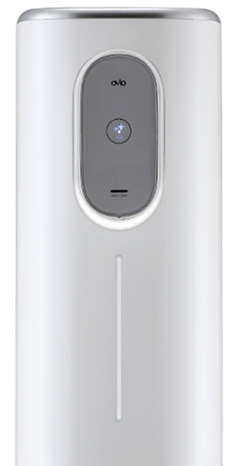
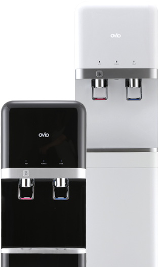
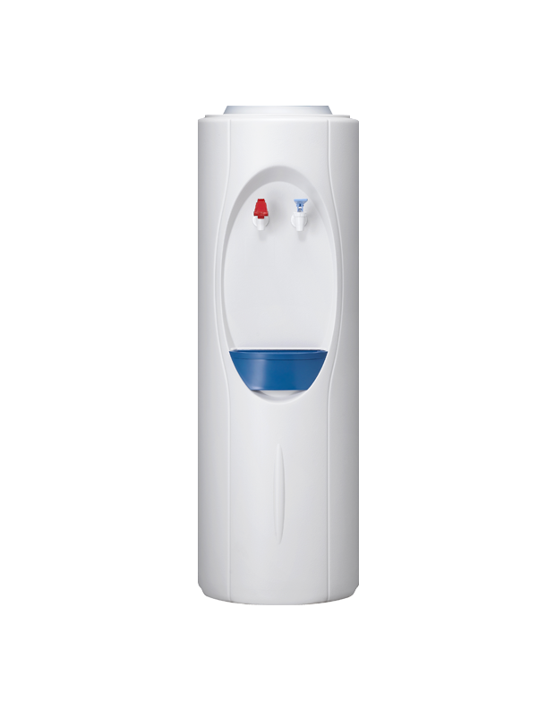
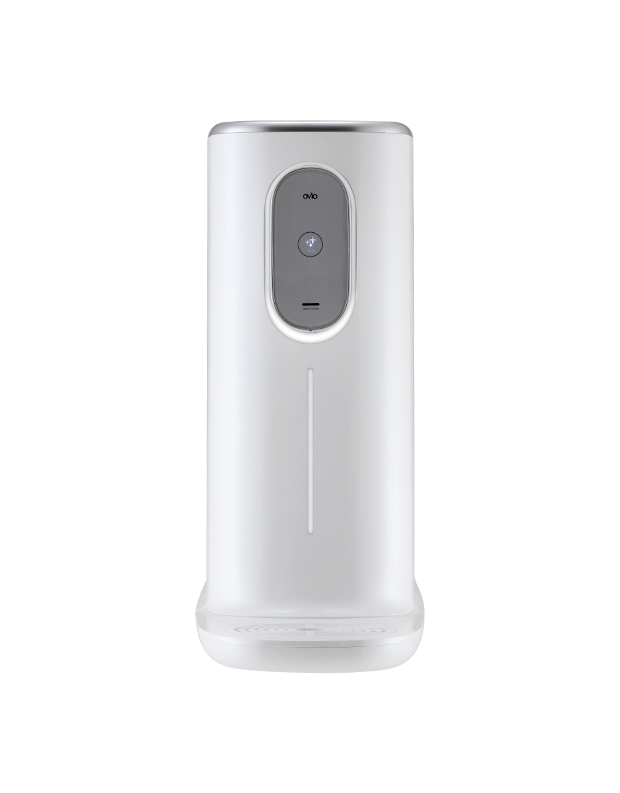
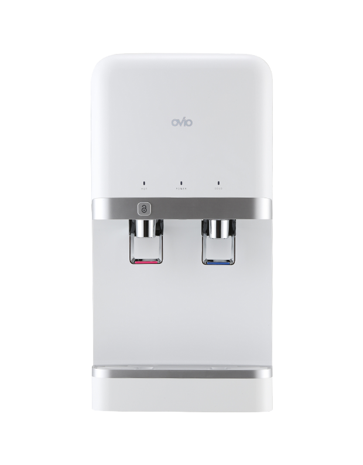
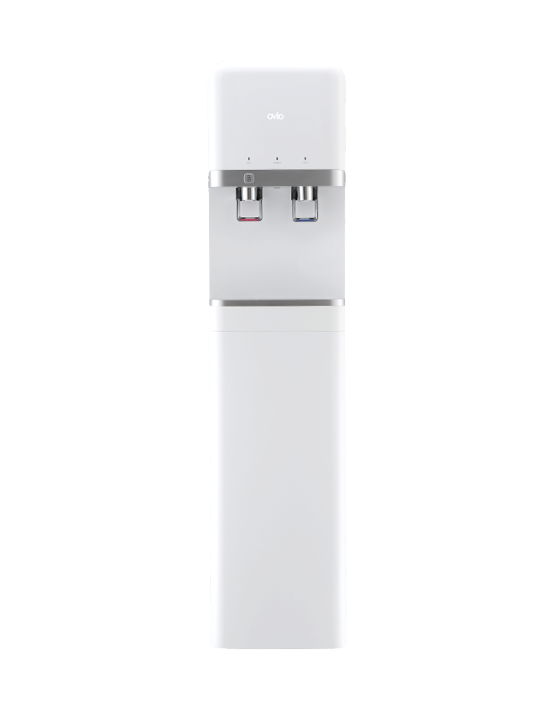
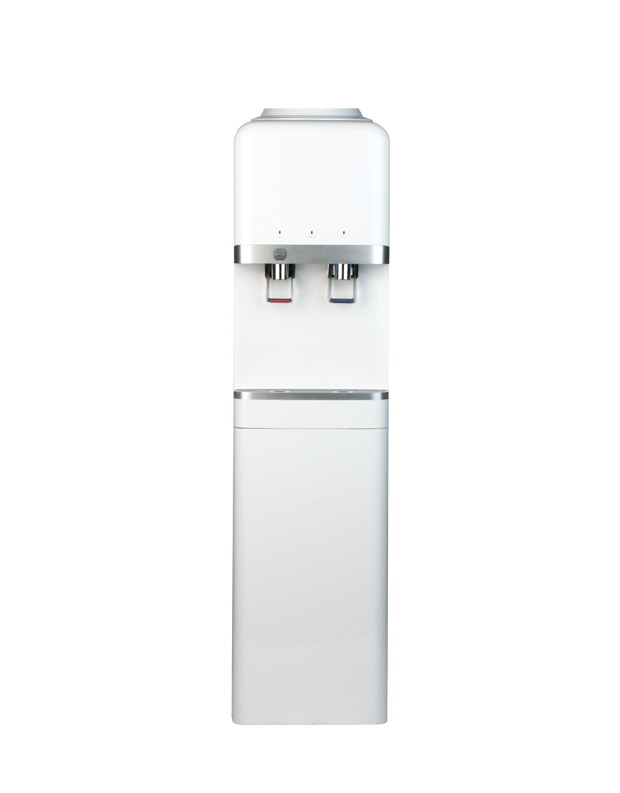
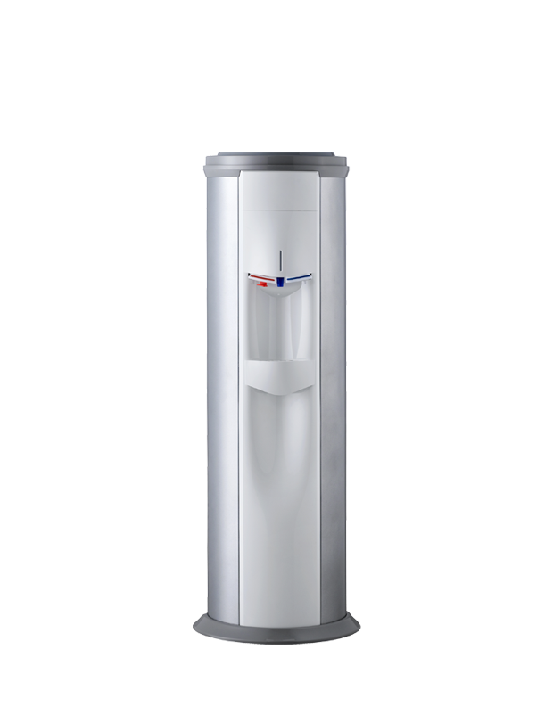

회사소개
제품소개
기술소개
홍보센터
고객센터
INNOVATION
신기술로 새로운 가치 창출
R&D투자와 창의적인 아이디어로 끊임없이 신기술에 도전합니다.

오비오 직수 정수기
OHC-7000D
위생적인 직수 방식으로 제품 내부 유로부는 전기 분해 살균
취수부 노즐은 UVC로 살균하여 오염으로부터 안심하실 수 있습니다.
소비자 중심 설계로 불필요한 전기 소모는 최소화하고
필터 교환은 원터치로 쉽게 하실 수 있습니다.
VIEW MORE
오비오 냉온 정수기
OHC-200U
위생적인 직수 방식으로 제품 내부 유로부는 전기 분해 살균
취수부 노즐은 UVC로 살균하여 오염으로부터 안심하실 수 있습니다.
소비자 중심 설계로 불필요한 전기 소모는 최소화하고
필터 교환은 원터치로 쉽게 하실 수 있습니다.
VIEW MORE

제품소개
혁신적 기술과 차별화된 품질을 바탕으로 최고의 제품을 만듭니다.





